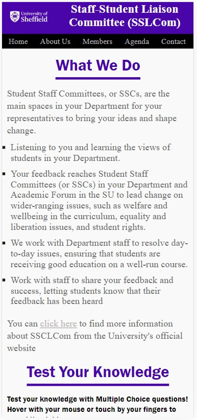
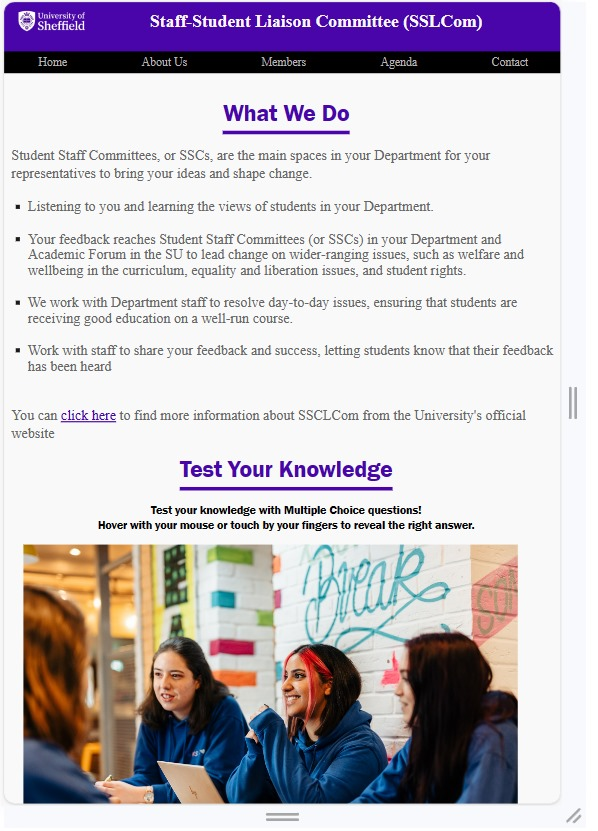

All About My Testing
Optimisation
Image Compression: I use image compression methods to minimize file sizes without sacrificing quality. This guarantees fast image loading, especially on sluggish network connections.
Responsive Images: I offer responsive photos that are presented according to the screen size and device of the user. By doing this, you can guarantee that users see images that are the right size, saving bandwidth and accelerating loading times.
Browser Tools for Optimization: Tools for your browser, like Google Chrome DevTools, can reveal details about how resources, like images, load on your website. Make informed optimizations by using these tools to analyze network performance, determine image loading times, and identify issues.
Debugging
HTML & CSS Validator: I tried them. They pointed out things that did not really matter as it would not change the output. It was more like to follow the rule book of HTML and CSS.
Browser Testing
It works with all browsers very well.
Mobile Phones: Chrome is on the left and Edge is on the right.
Tablets: Chrome is the first one to the left and Edge the second one.
Accessibility
Wave: For accessibility testing, I used wave. It helped me to fix some contrast problems.